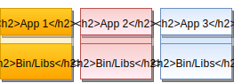
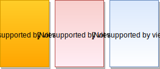
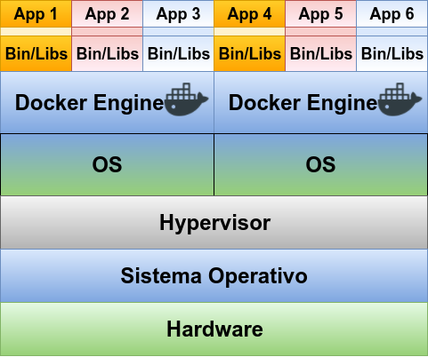
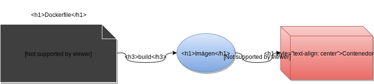
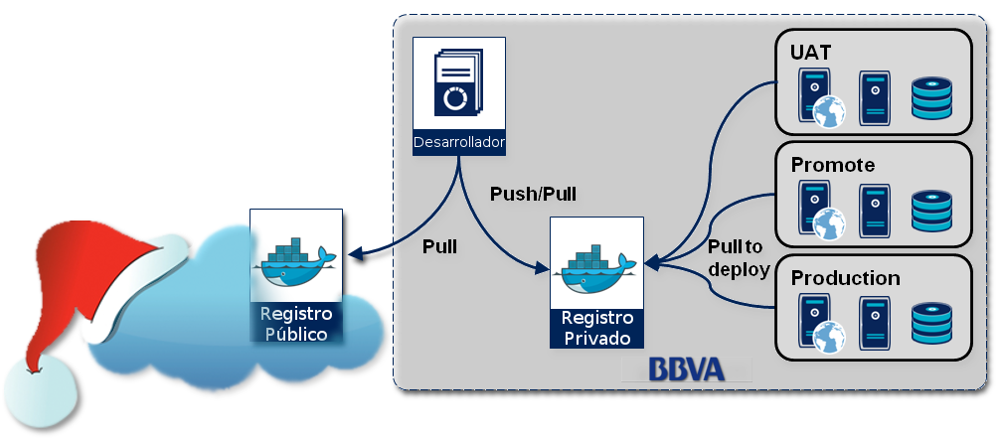
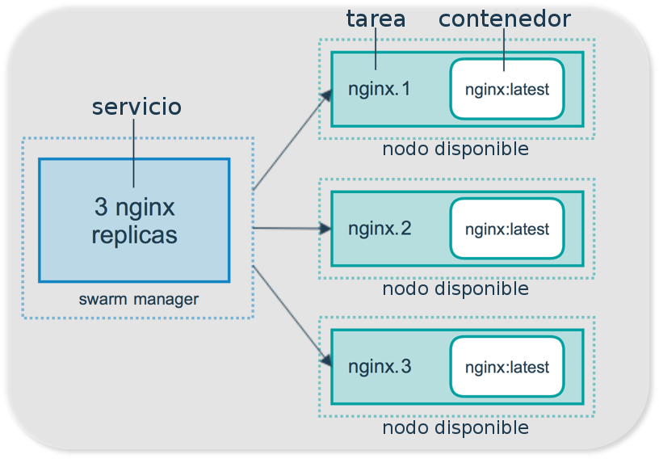
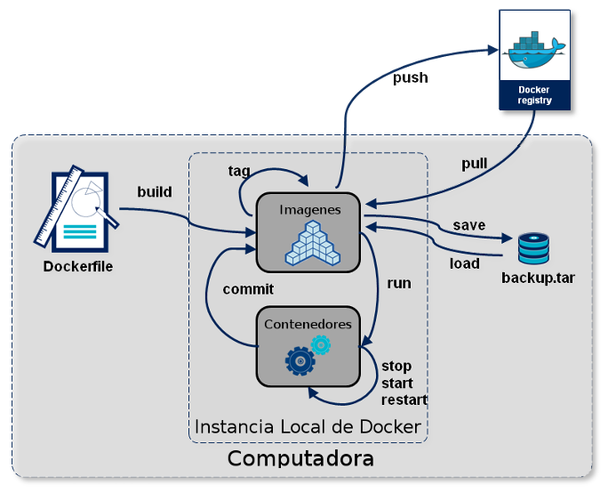

Introducción a Docker

Acerca de mi..

- Arquitectura de Seguridad
- DevOps - SysAdmin
- 18 años de experiencia
- Linux Fan
- Tipo Serio
¿Qué es Docker?
“Es un proyecto de código abierto que automatiza el despliegue de aplicaciones dentro de contenedores de software, proporcionando una capa adicional de abstracción y automatización de Virtualización a nivel de sistema operativo en Linux. Docker utiliza características de aislamiento de recursos del kernel de Linux, tales como cgroups y espacios de nombres (namespaces) para permitir que "contenedores" independientes se ejecuten dentro de una sola instancia de Linux, evitando la sobrecarga de iniciar y mantener máquinas virtuales.”
Entonces... ¿Qué es Docker?
¿Qué es una máquina virtual?
 ¿Qué es un contenedor?
Máquina Virtual vs Contenedor
¡Podemos mezclar ambas tecnologías!
Docker es:
Una tecnología de contenedores que se destaca por:
- Facilidad
- Imágenes
- Registro
- Servicios
¿Fácil?
Podemos definir una imagen por medio de un sólo archivo de texto llamado Dockerfile, por ejemplo:
FROM php:7.1-apache
COPY src/ /var/www/html/
EXPOSE 80
Imágenes
Registro
Servicios 


Etapas de Docker
¡Demo!
¿Preguntas?